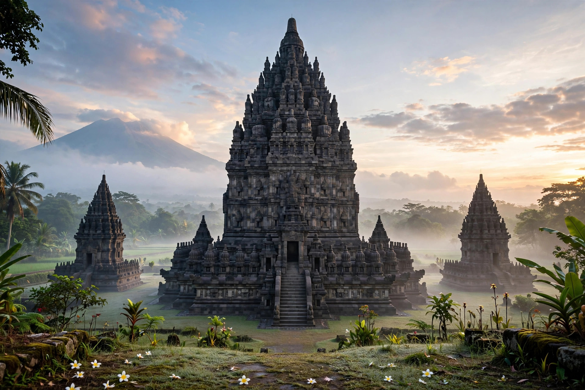

Prambanan
| Prambanan Temple Compounds | |
|---|---|
| Location | Central Java, Indonesia |
| Built | c. 850 CE, Mataram Kingdom |
| Dedicated to | Shiva (Trimurti) |
| UNESCO site | World Heritage Site (1991) |
Prambanan (Javanese: ꦥꦿꦩ꧀ꦧꦤꦤ꧀) is a 9th-century Hindu temple compound in Central Java, Indonesia, dedicated to the Trimurti — the expression of God as Creator (Brahma), Preserver (Vishnu) and Destroyer (Shiva). It is the largest Hindu temple site in Indonesia and one of the largest in Southeast Asia.

1. History
2. Architecture
3. Reliefs
4. Rediscovery and restoration
History
Prambanan was built around 850 CE by Rakai Pikatan of the Mataram Kingdom, possibly to mark the return of the Hindu Sanjaya dynasty to power in Central Java. The temple was abandoned in the 10th century when the Mataram court moved to East Java, and later damaged by earthquakes and volcanic eruptions of Mount Merapi.
Architecture
The compound follows the Hindu cosmological mandala: a central courtyard with the towering 47-metre Shiva temple flanked by the Brahma and Vishnu temples, surrounded by 224 smaller pervara shrines. The tall, pointed ratna roofs are characteristic of Javanese Hindu architecture.
Reliefs
The inner walls of the Shiva temple carry narrative reliefs of the Ramayana, while the Brahma temple depicts the Mahabharata — a rich source for the study of 9th-century Javanese life, dress and weaponry.
Rediscovery and restoration
The site was reported to Europeans in 1733 and surveyed by Colin Mackenzie in 1811 during the British interregnum. Major restoration began under the Dutch in the 1910s and continued after Indonesian independence. It was inscribed as a UNESCO World Heritage Site in 1991, alongside nearby Borobudur.
See also: Borobudur · Mataram Kingdom · Hindu temple